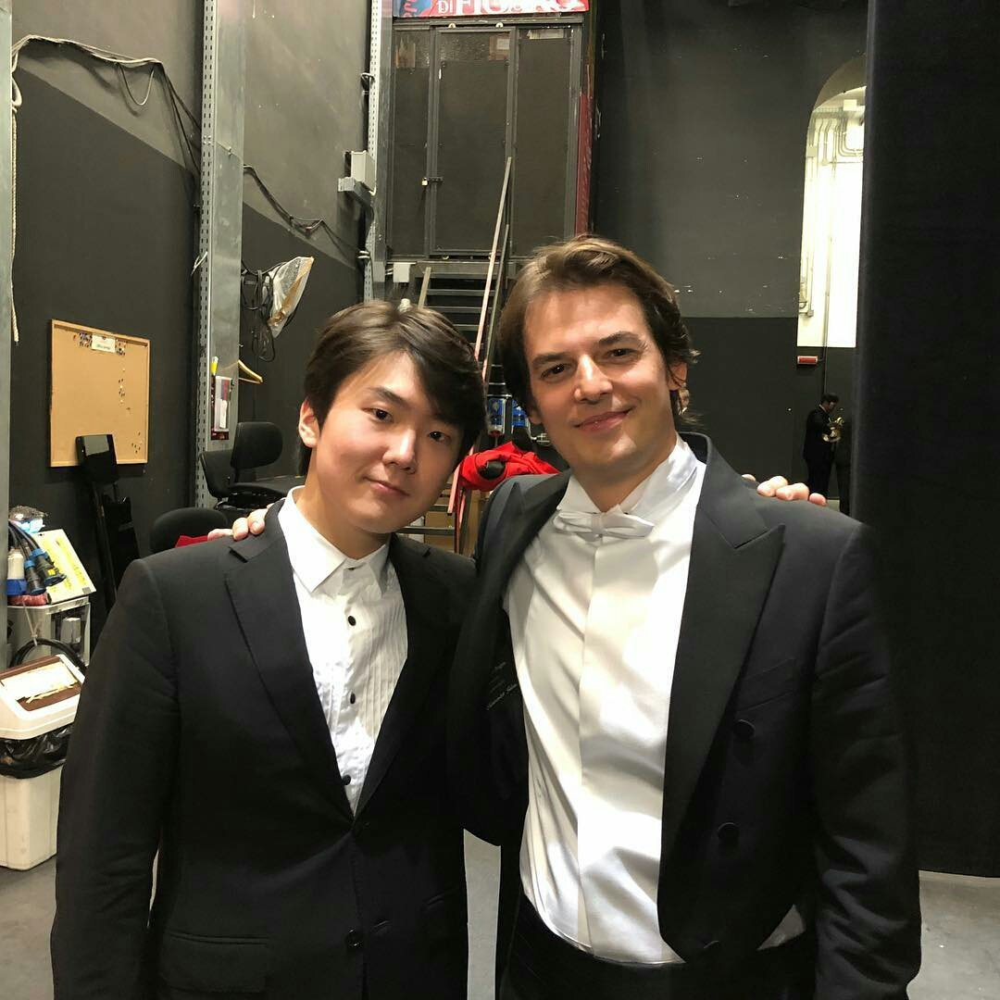

"… this latest Chopin Competition winner can stand proud next to the likes of such illustrious past winners as Pollini, Argerich and Zimerman”, Pianist, February 2016

- Seongjin Cho -
About
Seong-Jin Cho was brought to the world’s attention in 2015 when he won the First Prize at the Chopin International Competition in Warsaw. This same competition launched the careers of world-class artists such as Martha Argerich, Maurizio Pollini, or Krystian Zimerman.In January 2016, Seong-Jin signed an exclusive contract with Deutsche Grammophon. The first recording was released in November 2016 featuring Chopin’s First Concerto with the London Symphony Orchestra and Gianandrea Noseda and the Four Ballades. A solo Debussy recording was then released in November 2017. Both albums won impressive critical acclaim worldwide. In 2018 he will record a Mozart program with sonatas and the D minor concerto with the Chamber Orchestra of Europe and Yannick-Nézet-Seguin.An active recitalist, he performs in many of the world’s most prestigious concert halls. In the 2018/19 season, he will return to the main stage of Carnegie Hall as part of the Keyboard Virtuoso series where he had sold out in 2017. He will also return to Amsterdam’s Concertgebouw in the Master Pianists series and will play recitals at the Berlin Philharmonie Kammermusiksaal (Berliner Philharmonic concert series), Frankfurt’s Alte Oper, Los Angeles’ Walt Disney Hall (Los Angeles Philharmonic recital series), Zurich’s Tonhalle-Maag, Stockholm’s Konserthuset, Munich’s Prinzregententheater, Chicago’s Mandel Hall, Lyon’s Auditorium, La Roque d’Anthéron Festival, Verbier Festival, Gstaad Menuhin Festival, Rheingau Festival among several other venues.
During the next two seasons, he will play with the London Symphony Orchestra and Gianandrea Noseda, at the Barbican Centre, Radio France Philharmonic Orchestra and Myung-Whun Chung at the Paris Philharmonie, Gewandhaus Orchestra with Antonio Pappano, Hong Kong Philharmonic with Jaap van Zweden, Pittsburgh Symphony Orchestra with Manfred Honeck, Finnish Radio Orchestra and Hannu Lintu, Philadelphia Orchestra and Yannick-Nézet-Seguin, Orchestra della Scala with Myung-Whun Chung. He will also tour with the European Union Youth Orchestra and Gianandrea Noseda in venues like Amsterdam’s Concertgebouw, Royal Albert Hall, Berlin Konzerthaus, the London Philharmonic Orchestra and Robin Ticciati in Germany, the WDR Sinfonieorchester and Marek Janowski in Germany and Japan, and with the Santa Cecilia Orchestra and Antonio Pappano in Asia.
He collaborates with conductors at the highest level such as Sir Simon Rattle, Valery Gergiev, Esa-Pekka Salonen, Vladimir Ashkenazy, Yuri Temirkanov, Krzysztof Urbanski, Fabien Gabel, Marek Janowski, Vasily Petrenko, Jakub Hrusa, Leonard Slatkin or Mikhail Pletnev.
In November 2017, Seong-Jin stepped in for Lang Lang with the Berlin Philharmonic Orchestra for concerts in Berlin, Frankfurt, Hong-Kong and Seoul. Other major orchestral appearances include the Royal Concertgebouw Orchestra, Orchestre de Paris, Mariinsky Orchestra, Munich Philharmonic Orchestra, Rundfunk-Sinfonieorchester Berlin, Royal Liverpool Philharmonic Orchestra, NHK Symphony Orchestra, Philharmonia Orchestra, Seoul Philharmonic Orchestra, Czech Philharmonic Orchestra, Budapest Festival Orchestra, Danish National Symphony Orchestra, Russian National Orchestra, Detroit Symphony Orchestra, NDR Elbphilharmonie Orchester, RAI Symphony Orchestra, Hessischer Rundfunk Sinfonieorchester.
Born in 1994 in Seoul, Seong-Jin Cho started learning the piano at 6 and gave his first public recital at age 11. In 2009, he became the youngest-ever winner of Japan’s Hamamatsu International Piano Competition. In 2011, he won Third prize at the Tchaikovsky Competition in Moscow at the age of 17. In 2012, he moved to Paris to study with Michel Béroff at the Paris Conservatoire National Supérieur de Musique where he graduated in 2015. He is now based in Berlin.
Events


Gallery


